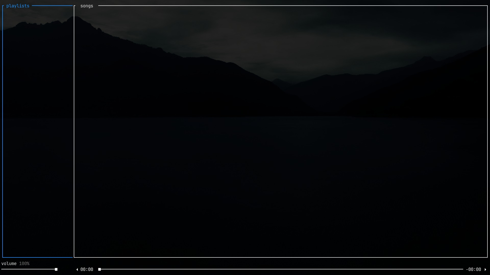
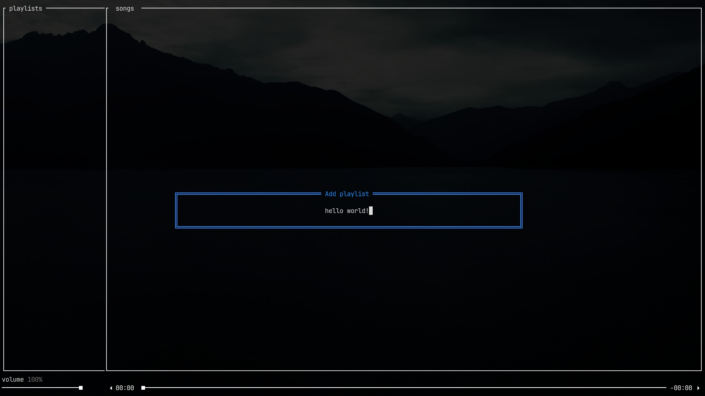
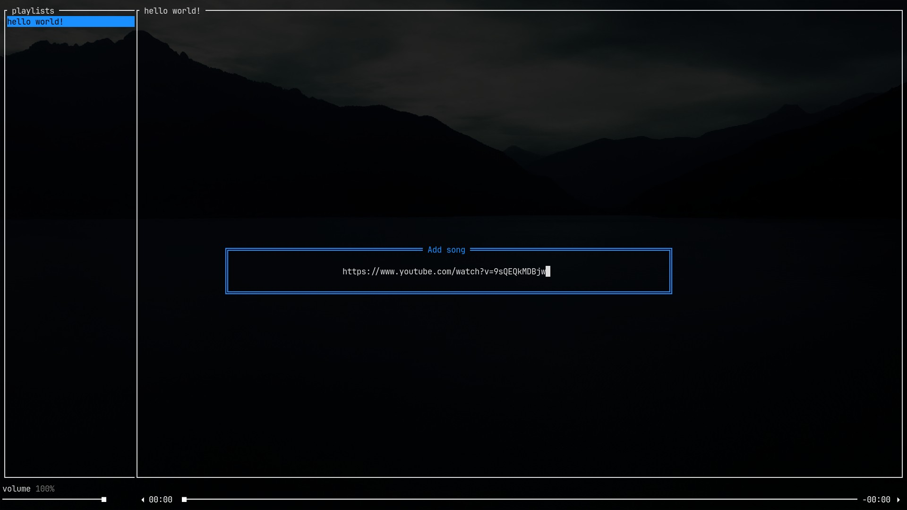
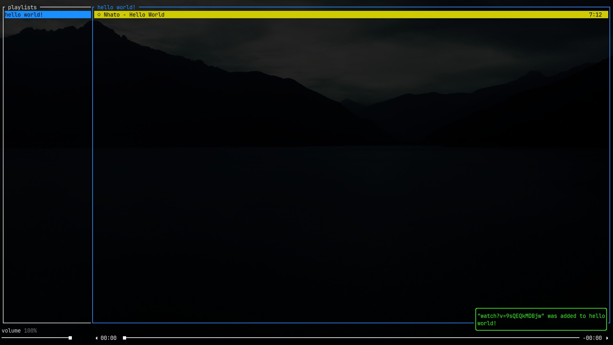
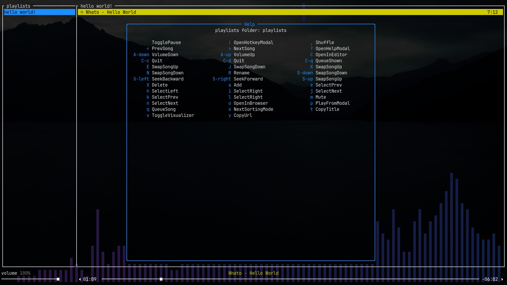
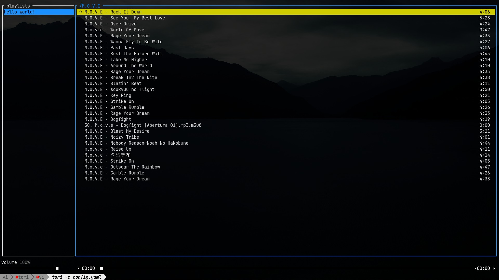

Getting Started
Installing
- Make sure you have the dependencies installed
- Install the Rust toolchain
- Run
cargo install tori
Alternatively, if you use an Arch-based Linux distro, you can install tori from the AUR: yay -S tori-bin
Prebuild binaries for Windows, Mac and other Linux distros will be available soon.
Dependencies
yt-dlp
If you want to use yt-dlp instead of youtube-dl, edit your mpv.conf and paste the following line:
script-opts=ytdl_hook-ytdl_path=yt-dlp
Either this or follow the guide I followed :)
First Steps
After installing, you should now be able to run tori in your terminal and be greeted
with the main screen:

You can move focus between the different panes using the arrow keys, or the
vim-like keybindings h and l.
To add your first playlist, press a to open the add playlist prompt:

After pressing enter, you should see your playlist added to the list.
Now, add a song by focusing the songs pane and pressing a again:

You have now added your first song! Local files are also accepted, and adding a folder will add all of the songs inside it.

By default, pressing enter will play the currently selected song (but it will replace anything
that's currently playing, to append a song to the queue, press q instead). I also recommend
pressing v to enable the visualizer (requires cava to be
installed).
tori has many configurable commands. You can press ? to see the current bindings ~~while listening
to some Nhato tunes preferably~~:

Searching
Pressing / will enter "search mode", which filters songs based on the input. You can also use it
on the playlists pane to filter playlists.

esc clears the filter and enter "commits" the filter so you can use commands while a filter
is active.